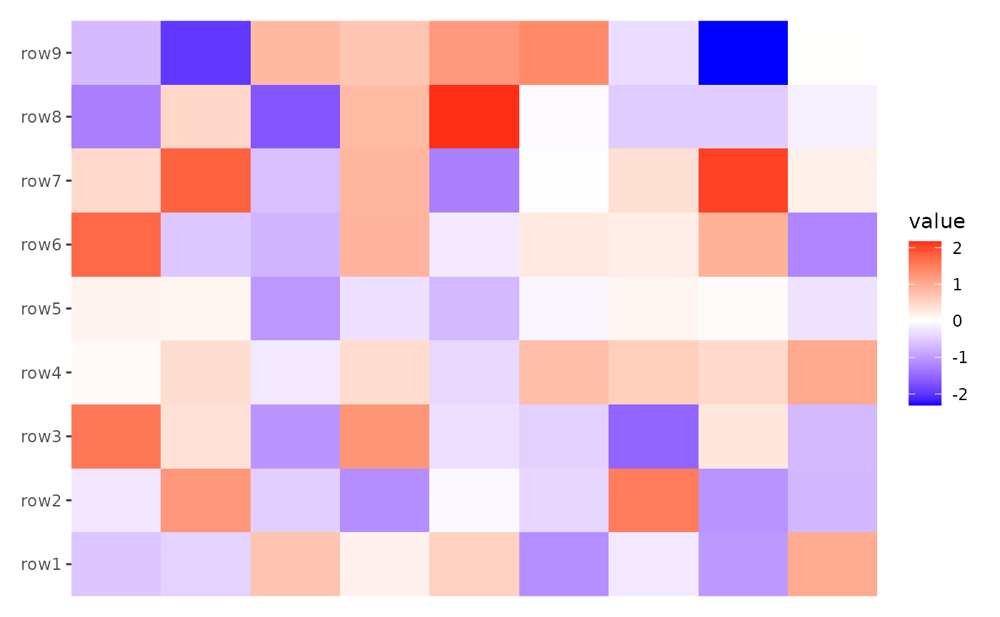
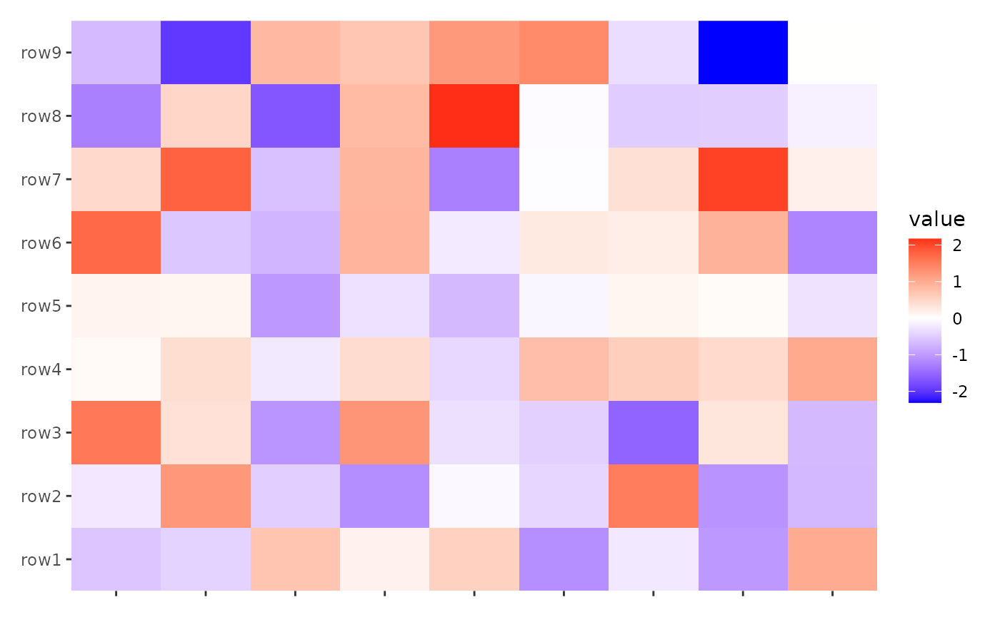
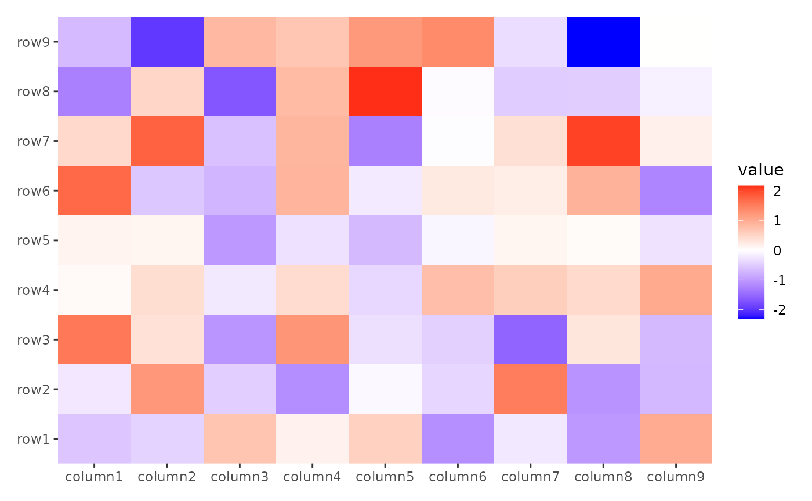
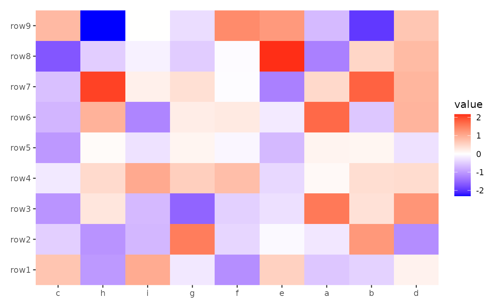
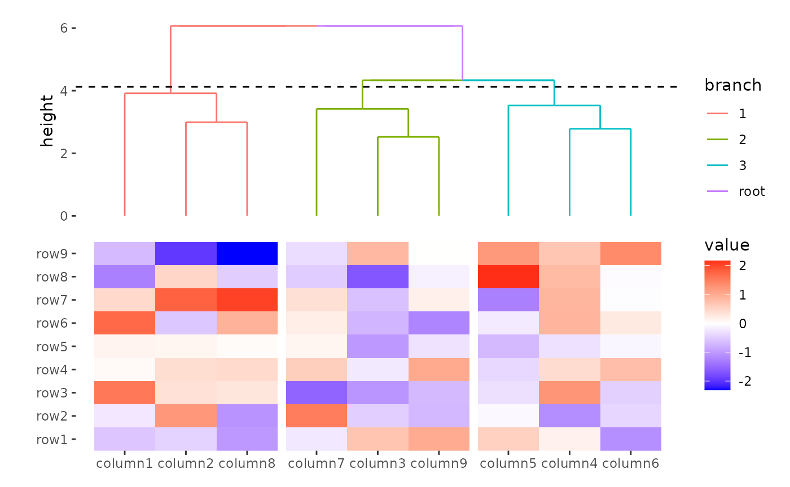
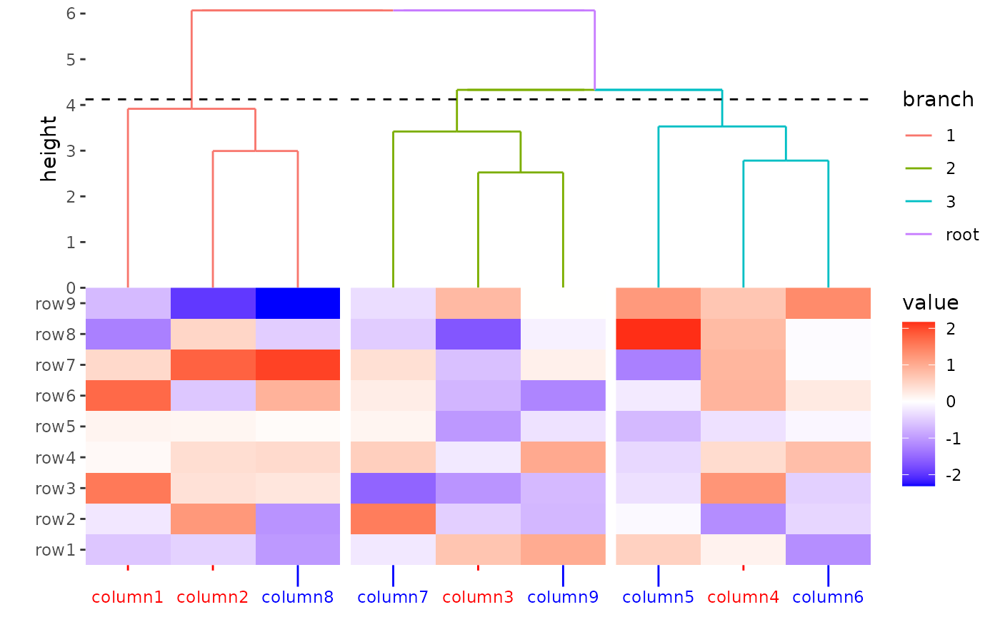
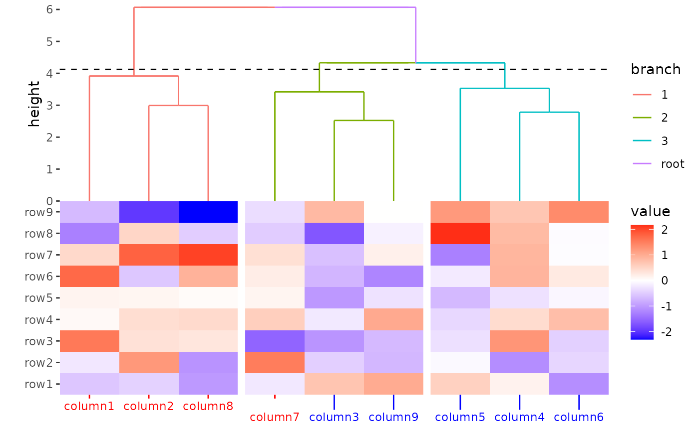
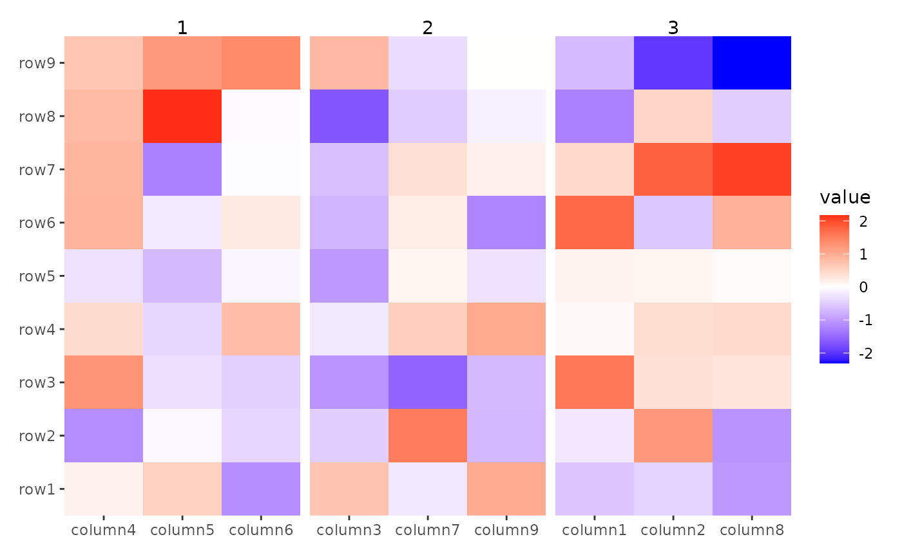

ggalign focuses on aligning observations across multiple
plots. While it builds on the ggplot2 framework, there are
key differences in how scales, facets, and coordinates are handled in
the layout axis. This vignette highlights the differences in syntax
between ggalign and ggplot2.
Layout Axis
The layout axis refers to specific axes in multi-plots layout: - x-axis in vertical stack layouts
x-axis in horizontal stack layouts
x- and y axes in the heatmap body: In heatmap layouts, both the x and y axes are used to align observations.
ggalign introduces special syntax and handling for these
axes, differing from the default behavior in ggplot2. These
adjustments ensure that observations are properly aligned and operations
are user-friendly.
Position Scales
We introduce some adjustments to better align with the layout concept
in breaks, labels and expand.
breaks
breaks and labels are typically handled
similarly to discrete scales, as we focus on aligning observations
(which should be regarded as discrete variables) in the layout axis;
however, a continuous scale can also be provided.
breaks should be one of:
- `NULL` for no breaks
- `waiver()` for the default breaks (the full data index or `NULL` if no
data names and `labels` is `waiver()`)
- A character vector of breaks (rownames / colunames of the matrix).
- A numeric vector of data index (must be an integer).
- A function that takes the data limits or the data index as input and
returns breaks as output. Also accepts rlang lambda function notation.
ggheatmap(small_mat) + scale_x_continuous(breaks = NULL)
#> → heatmap built by `geom_tile()`
ggheatmap(small_mat) + scale_x_continuous()
#> → heatmap built by `geom_tile()`
no_names <- small_mat
colnames(no_names) <- NULL
ggheatmap(no_names) + scale_x_continuous()
#> → heatmap built by `geom_tile()`
ggheatmap(small_mat) + scale_x_continuous(breaks = c("column3", "column5"))
#> → heatmap built by `geom_tile()`
ggheatmap(small_mat) + scale_x_continuous(breaks = c(3, 5))
#> → heatmap built by `geom_tile()`
Floating number were not allowed in breaks.
ggheatmap(small_mat) + scale_x_continuous(breaks = c(3.5, 5))
#> → heatmap built by `geom_tile()`
#> Error in `scale_x_continuous()`:
#> ! Can't convert from `breaks` <double> to <integer> due to loss of precision.
#> • Locations: 1labels
labels should be one of:
- `NULL` for no labels
- `waiver()` for the default labels (data names)
- A character vector giving labels (must be same length as breaks)
- An expression vector (must be the same length as breaks). See `?plotmath`
for details.
- A function that takes the data names (or breaks if data has no names) as
input and returns labels as output. This can be also a rlang lambda
function.
ggheatmap(small_mat) + scale_x_continuous(labels = NULL)
#> → heatmap built by `geom_tile()`
ggheatmap(small_mat) + scale_x_continuous()
#> → heatmap built by `geom_tile()`
ggheatmap(small_mat) +
scale_x_continuous(labels = letters[seq_len(ncol(small_mat))])
#> → heatmap built by `geom_tile()`
ggheatmap(small_mat) +
scale_x_continuous(breaks = c(3, 5), labels = c("a", "b"))
#> → heatmap built by `geom_tile()`data ordering
Both breaks and labels should be provided
in the original order of the raw data, the internal will reorder them
accordingly if you reorder the layout axis.
index <- order(colMeans(small_mat))
xlabels <- letters[seq_len(ncol(small_mat))]
print(xlabels[index])
#> [1] "c" "h" "i" "g" "f" "e" "a" "b" "d"
ggheatmap(small_mat) +
scale_x_continuous(labels = xlabels) +
hmanno("t") +
align_order(index)
#> → heatmap built by `geom_tile()`
expand
By default, we utilize zero expansion for the layout axis. This is typically the desired setting. If you wish to introduce expansion, you must manually adjust it and apply it to each plot to ensure proper axis alignment.
ggheatmap(small_mat) +
scale_x_continuous(expand = expansion(mult = 0.1)) +
hmanno("t") +
align_dendro(aes(color = branch), k = 3L) +
scale_x_continuous(expand = expansion(mult = 0.1))
#> → heatmap built by `geom_tile()`
theme
Although ggplot2 does not officially support vectorized input for
theme elements, we can still utilize it. For layout axis theme elements
such as axis.text, axis.ticks, and
axis.ticks.length, these will be reordered according to the
layout axis ordering.
ggheatmap(small_mat) +
theme(
axis.text.x = element_text(
colour = c(rep("red", 4), rep("blue", 5))
),
axis.ticks.x = element_line(
colour = c(rep("red", 4), rep("blue", 5))
),
axis.ticks.length.x = unit(rep(c(1, 4), times = c(4, 5)), "mm")
) +
hmanno("t") +
align_dendro(aes(color = branch), k = 3L) +
scale_y_continuous(expand = expansion()) &
theme(plot.margin = margin())
#> Warning: Vectorized input to `element_text()` is not officially supported.
#> ℹ Results may be unexpected or may change in future versions of ggplot2.
#> → heatmap built by `geom_tile()`
To prevent the reordering, wrap the values with I():
ggheatmap(small_mat) +
theme(
axis.text.x = element_text(
colour = I(c(rep("red", 4), rep("blue", 5)))
),
axis.ticks.x = element_line(
colour = I(c(rep("red", 4), rep("blue", 5)))
),
axis.ticks.length.x = I(unit(rep(c(1, 4), times = c(4, 5)), "mm"))
) +
hmanno("t") +
align_dendro(aes(color = branch), k = 3L) +
scale_y_continuous(expand = expansion()) &
theme(plot.margin = margin())
#> Warning: Vectorized input to `element_text()` is not officially supported.
#> ℹ Results may be unexpected or may change in future versions of ggplot2.
#> → heatmap built by `geom_tile()`
Facets
When working with facets, manual configuration of the panel using the
facet_*() functions is not possible since the internal
structure will use facet_grid() to set the row/column
groups defined by align_*() functions. However, you can
still use facet_grid() or facet_null() (if no
panel) to control other arguments except layout axis panels
(rows in horizontal stack layout or cols in
vertical stack layout, or both rows and cols
in heatmap body).
A common use case is to modify the panel strip text. The default
theme (theme_ggalign()) will always remove the panel strip
text, you can override this behaviour with
theme(strip.text = element_text()) to add the panel title
in the plot area.
ggheatmap(small_mat) +
facet_grid(labeller = labeller(.column_panel = function(x) letters[as.integer(x)])) +
theme(strip.text = element_text()) +
hmanno("top") +
align_kmeans(centers = 3L)
#> → heatmap built by `geom_tile()`
Coords
Currently, only cartesian coordinate can be used to align axis well.
Internally, the limits will always be set to the number of observations,
with an additional range expansion of 0.5 added on both
ends.
Session information
sessionInfo()
#> R version 4.4.1 (2024-06-14)
#> Platform: x86_64-pc-linux-gnu
#> Running under: Ubuntu 22.04.5 LTS
#>
#> Matrix products: default
#> BLAS: /usr/lib/x86_64-linux-gnu/openblas-pthread/libblas.so.3
#> LAPACK: /usr/lib/x86_64-linux-gnu/openblas-pthread/libopenblasp-r0.3.20.so; LAPACK version 3.10.0
#>
#> locale:
#> [1] LC_CTYPE=C.UTF-8 LC_NUMERIC=C LC_TIME=C.UTF-8
#> [4] LC_COLLATE=C.UTF-8 LC_MONETARY=C.UTF-8 LC_MESSAGES=C.UTF-8
#> [7] LC_PAPER=C.UTF-8 LC_NAME=C LC_ADDRESS=C
#> [10] LC_TELEPHONE=C LC_MEASUREMENT=C.UTF-8 LC_IDENTIFICATION=C
#>
#> time zone: UTC
#> tzcode source: system (glibc)
#>
#> attached base packages:
#> [1] stats graphics grDevices utils datasets methods base
#>
#> other attached packages:
#> [1] ggalign_0.0.4.9000 ggplot2_3.5.1
#>
#> loaded via a namespace (and not attached):
#> [1] gtable_0.3.5 jsonlite_1.8.9 dplyr_1.1.4 compiler_4.4.1
#> [5] highr_0.11 tidyselect_1.2.1 jquerylib_0.1.4 systemfonts_1.1.0
#> [9] scales_1.3.0 textshaping_0.4.0 yaml_2.3.10 fastmap_1.2.0
#> [13] R6_2.5.1 labeling_0.4.3 generics_0.1.3 knitr_1.48
#> [17] tibble_3.2.1 desc_1.4.3 munsell_0.5.1 bslib_0.8.0
#> [21] pillar_1.9.0 rlang_1.1.4 utf8_1.2.4 cachem_1.1.0
#> [25] xfun_0.48 fs_1.6.4 sass_0.4.9 cli_3.6.3
#> [29] pkgdown_2.1.1 withr_3.0.1 magrittr_2.0.3 digest_0.6.37
#> [33] grid_4.4.1 lifecycle_1.0.4 vctrs_0.6.5 evaluate_1.0.1
#> [37] glue_1.8.0 farver_2.1.2 ragg_1.3.3 fansi_1.0.6
#> [41] colorspace_2.1-1 rmarkdown_2.28 tools_4.4.1 pkgconfig_2.0.3
#> [45] htmltools_0.5.8.1